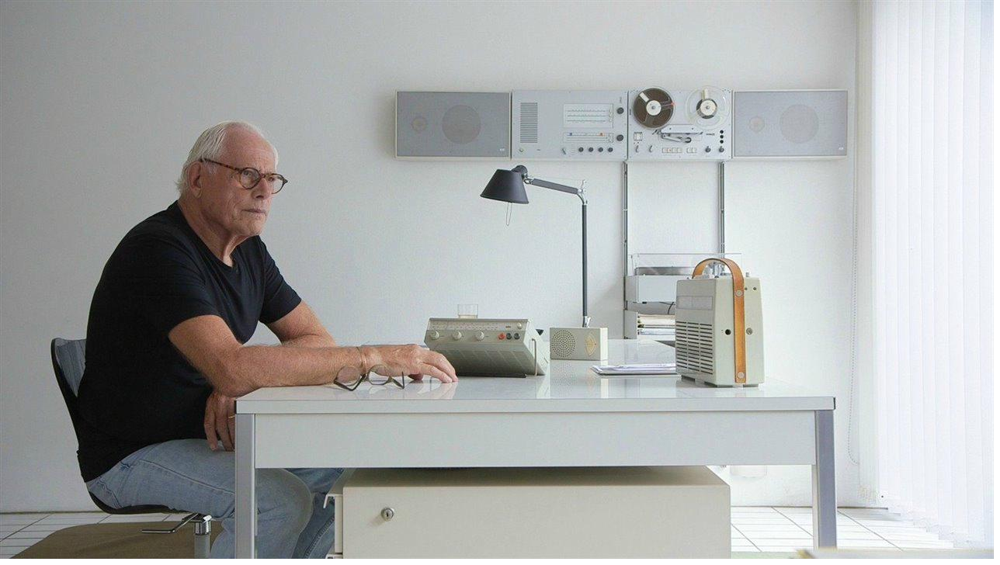

Dieter Rams, pionero del diseño funcional.
El diseñador que dijo menos, pero mejor
Dieter Rams es uno de los diseñadores industriales más influyentes del siglo XX. Su trabajo en Braun y Vitsoe marcó la historia del diseño y sigue inspirando a generaciones de creadores hasta hoy.
A través de este sitio exploramos su vida, sus diseños más icónicos, los productos que revolucionaron el mercado y los diez principios del buen diseño que definieron su filosofía.
"Menos, pero mejor."
— Dieter Rams
Trailer del documental
Un vistazo a la vida y obra de Dieter Rams a través del documental de Gary Hustwit (2018).